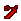
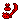

太古龙骨 | 怪物猎人双十字
太古龙骨 - 【MHXX】怪物猎人双十字
| 名称 | 太古龙骨 (XX) たいこりゅうこつ |
||||
|---|---|---|---|---|---|
| 稀有度度 | 8 | 所持 | 99 | 売値 | |
| 素材 | 評価値 | 8 | |||
| 説明 | 大型龙的上质之骨。荒々しくも、厳か之そ的形は悠久的时を感じさせる。 | ||||
| [入手] 剥取 部位破坏 |
[G级] 霞龙 尾巴剥取 1回 12% [G级] 风翔龙 个体剥取 3回 5% [G级] 炎王龙 尾巴剥取 1回 21% [G级] 老山龙 背剥取 3回 35% |
| [入手] 任务报酬 |
[主任务] 村★10高难度：灾祸比钢铁更坚硬 2个 讨伐时 12% [主任务] 村★10高难度：灾祸比钢铁更坚硬 10% [主任务] 村★10高难度：灾祸比钢铁更坚硬 2个 5% [主任务] 村★10高难度：灾祸比钢铁更坚硬 2个 16% [主任务] 村★10高难度：隐于黄昏 讨伐时 12% [主任务] 村★10高难度：隐于黄昏 2个 讨伐时 5% [主任务] 村★10高难度：隐于黄昏 10% [主任务] 村★10高难度：隐于黄昏 2个 5% [主任务] 村★10高难度：隐于黄昏 20% [主任务] 村★10高难度：阳炎的帝国 讨伐时 8% [主任务] 村★10高难度：阳炎的帝国 10% [主任务] 村★10高难度：阳炎的帝国 2个 5% [主任务] 村★10高难度：阳炎的帝国 15% [主任务] G★3巨大龙的侵攻 讨伐时 20% [主任务] G★3巨大龙的侵攻 击退时 15% [主任务] G★3巨大龙的侵攻 100% [主任务] G★3巨大龙的侵攻 8% [主任务] G★3巨大龙的侵攻 2个 4% [主任务] G★3巨大龙的侵攻 2个 讨伐时 25% [主任务] G★4灾祸比钢铁更坚硬 2个 讨伐时 12% [主任务] G★4灾祸比钢铁更坚硬 10% [主任务] G★4灾祸比钢铁更坚硬 2个 5% [主任务] G★4灾祸比钢铁更坚硬 2个 16% [副任务] G★4灾祸比钢铁更坚硬 2个 12% [主任务] G★4暴风雨呼唤者 2个 讨伐时 12% [主任务] G★4暴风雨呼唤者 10% [主任务] G★4暴风雨呼唤者 2个 5% [主任务] G★4暴风雨呼唤者 2个 16% [副任务] G★4暴风雨呼唤者 2个 12% [主任务] G★4从虚空中现身的家伙 讨伐时 12% [主任务] G★4从虚空中现身的家伙 2个 讨伐时 5% [主任务] G★4从虚空中现身的家伙 10% [主任务] G★4从虚空中现身的家伙 2个 5% [主任务] G★4从虚空中现身的家伙 20% [副任务] G★4从虚空中现身的家伙 12% [副任务] G★4从虚空中现身的家伙 2个 5% [主任务] G★4消失于虚空的家伙 讨伐时 12% [主任务] G★4消失于虚空的家伙 2个 讨伐时 5% [主任务] G★4消失于虚空的家伙 10% [主任务] G★4消失于虚空的家伙 2个 5% [主任务] G★4消失于虚空的家伙 20% [副任务] G★4消失于虚空的家伙 12% [副任务] G★4消失于虚空的家伙 2个 5% [主任务] G★4爆炎之尘在沙漠飞舞 讨伐时 8% [主任务] G★4爆炎之尘在沙漠飞舞 10% [主任务] G★4爆炎之尘在沙漠飞舞 2个 5% [主任务] G★4爆炎之尘在沙漠飞舞 15% [副任务] G★4爆炎之尘在沙漠飞舞 8% [主任务] G★4财宝在爆炎中 讨伐时 8% [主任务] G★4财宝在爆炎中 10% [主任务] G★4财宝在爆炎中 2个 5% [主任务] G★4财宝在爆炎中 15% [副任务] G★4财宝在爆炎中 8% [主任务] G★4反抗神明 10% [主任务] G★4反抗神明 2个 5% [主任务] G★4传说的黑龙 20% [主任务] G★4传说的黑龙 10% [主任务] G★4传说的黑龙 2个 5% [主任务] G★4终末之时 34% [主任务] G★4终末之时 10% [主任务] G★4终末之时 2个 5% [主任务] G★4祖龙 34% [主任务] G★4祖龙 10% [主任务] G★4祖龙 2个 5% [主任务] 配信★老山龙、侵攻中！ 2个 讨伐时 12% [主任务] 配信★老山龙、侵攻中！ 击退时 12% [主任务] 配信★老山龙、侵攻中！ 2个 击退时 7% [主任务] 配信★老山龙、侵攻中！ 2个 12% [主任务] 配信★老山龙、侵攻中！ 2个 讨伐时 19% [主任务] 配信★黑色传说与的对峙 2个 14% [主任务] 配信★ナイショ的霞龙 2个 12% [主任务] 配信★ナイショ的霞龙 2个 12% [主任务] 配信★ナイショ的霞龙 20% [主任务] 配信★地底火山的炎的王 9% [主任务] 配信★地底火山的炎的王 2个 12% [主任务] 配信★地底火山的炎的王 15% [主任务] 配信★传说与的战い 2个 14% |
| [用途] 武器 |
 断骨大剑11 [强化] 2个 断骨大剑11 [强化] 2个 升天7 [强化] 3个  暴君狂乱巨剑5 [强化] 2个 暴君狂乱巨剑5 [强化] 2个 煌ブラック摇晃イド(黑大剑)阿尔雷柏4 [强化] 3个  永恒大剑6 [强化] 2个 永恒大剑6 [强化] 2个  大颚刃好战11 [强化] 2个 大颚刃好战11 [强化] 2个  祸镰瓦尔纳乌斯6 [强化] 2个 祸镰瓦尔纳乌斯6 [强化] 2个  暴君灾厄伤痛5 [强化] 2个 暴君灾厄伤痛5 [强化] 2个  漆黑爪【终焉】4 [强化] 3个 キングククリ11 [强化] 2个 キングククリ11 [强化] 2个 Gククリ2 [强化] 3个  亡国的宝錫フェッダ6 [强化] 2个 亡国的宝錫フェッダ6 [强化] 2个 煌黑剑アルスタ4 [强化] 3个  大师剑刃7 [强化] 3个 破龙剑【邪绝一门】6 [强化] 2个 大师剑刃7 [强化] 3个 破龙剑【邪绝一门】6 [强化] 2个  首脑双剑11 [强化] 2个 首脑双剑11 [强化] 2个  暴君愤怒5 [强化] 2个 暴君愤怒5 [强化] 2个  暴君混沌5 [强化] 2个 工房真锻锤・大殴4 [强化] 2个 暴君混沌5 [强化] 2个 工房真锻锤・大殴4 [强化] 2个 煌黑坚锤破毁4 [强化] 3个  纹章・核心5 [强化] 2个 纹章・核心5 [强化] 2个  ヘビィ骨制ホルン11 [强化] 2个 ヘビィ骨制ホルン11 [强化] 2个  锐利标枪7 [强化] 2个 锐利标枪7 [强化] 2个  凄惨之牙6 [强化] 5个 凄惨之牙6 [强化] 5个 煌黑枪致命4 [强化] 3个 巨龙枪 [生产] 4个  新生英勇长枪6 [强化] 2个 新生英勇长枪6 [强化] 2个  暴君贪欲5 [强化] 2个 大师铳枪5 [强化] 3个 暴君贪欲5 [强化] 2个 大师铳枪5 [强化] 3个  无情夺命镰6 [强化] 2个 无情夺命镰6 [强化] 2个  无上支配者5 [强化] 2个 无上支配者5 [强化] 2个  黑丰收斩击斧4 [强化] 3个 黑丰收斩击斧4 [强化] 3个  断骨盾斧11 [强化] 4个 断骨盾斧11 [强化] 4个 煌黑的盾斧 [生产] 3个  祸棍伽拉摩尔斯6 [强化] 2个 祸棍伽拉摩尔斯6 [强化] 2个  煌黑龙棍阿鲁因4 [强化] 3个 角龙暴君弓3 [强化] 3个 角龙暴君弓3 [强化] 3个 卡洋茶弹弓 [生产] 1个  龙弓【国崩】 [生产] 3个 龙弓【国崩】 [生产] 3个  狙杀弩枪10 [强化] 3个 交错火光10 [强化] 2个 狙杀弩枪10 [强化] 3个 交错火光10 [强化] 2个  无情重虎弩4 [强化] 3个 无情重虎弩4 [强化] 3个  骨制猎弩11 [强化] 2个 大海盗J加农炮4 [强化] 3个 骨制猎弩11 [强化] 2个 大海盗J加农炮4 [强化] 3个 |
| [用途] 防具生产 |
 桐花・真【盔】 [生产] 1个 桐花・真【盔】 [生产] 1个  桐花・真【胸甲】 [生产] 1个 夜叉【羽衣】 [生产] 2个 桐花・真【胸甲】 [生产] 1个 夜叉【羽衣】 [生产] 2个  龙之身 [生产] 2个 龙之身 [生产] 2个  桐花・真【护手】 [生产] 1个 桐花・真【护手】 [生产] 1个  钢龙Ｘ臂铠 [生产] 2个 三叶真【大袖】 [生产] 4个 钢龙Ｘ臂铠 [生产] 2个 三叶真【大袖】 [生产] 4个  桐花・真【腰甲】 [生产] 1个 夜叉【腰巻】 [生产] 2个 桐花・真【腰甲】 [生产] 1个 夜叉【腰巻】 [生产] 2个  桐花・真【具足】 [生产] 1个 夜叉【御足】 [生产] 2个 桐花・真【具足】 [生产] 1个 夜叉【御足】 [生产] 2个 |
| [用途] 防具强化 |
 忍・天/忍・地系列 Lv10 [强化] 1个 忍・空/忍・海系列 Lv10 [强化] 1个 大师系列 Lv10 [强化] 1个 煌黑龙系列 Lv8 [强化] 1个 龙王的独眼 Lv10 [强化] 1个 城塞特攻队/城塞隠密队系列 Lv5 [强化] 1个 忍・极天/忍・极地系列 Lv5 [强化] 1个 大师Ｘ系列 Lv5 [强化] 1个 龙王的独眼Ｘ Lv5 [强化] 2个 晓丸/曙丸系列 Lv5 [强化] 1个 凛/艶系列 Lv5 [强化] 1个 烈火・覇/活火・覇系列 Lv10 [强化] 1个 和歌・覇/和乐・覇系列 Lv10 [强化] 1个 星座系列 Lv10 [强化] 1个 瑞星・覇/景星・覇系列 Lv10 [强化] 1个 夢見・覇/夢語・覇系列 Lv10 [强化] 1个 星之领主系列 Lv10 [强化] 1个 忍・天/忍・地系列 Lv10 [强化] 1个 忍・空/忍・海系列 Lv10 [强化] 1个 大师系列 Lv10 [强化] 1个 煌黑龙系列 Lv8 [强化] 1个 龙王的独眼 Lv10 [强化] 1个 城塞特攻队/城塞隠密队系列 Lv5 [强化] 1个 忍・极天/忍・极地系列 Lv5 [强化] 1个 大师Ｘ系列 Lv5 [强化] 1个 龙王的独眼Ｘ Lv5 [强化] 2个 晓丸/曙丸系列 Lv5 [强化] 1个 凛/艶系列 Lv5 [强化] 1个 烈火・覇/活火・覇系列 Lv10 [强化] 1个 和歌・覇/和乐・覇系列 Lv10 [强化] 1个 星座系列 Lv10 [强化] 1个 瑞星・覇/景星・覇系列 Lv10 [强化] 1个 夢見・覇/夢語・覇系列 Lv10 [强化] 1个 星之领主系列 Lv10 [强化] 1个 |
| [用途] 装饰品 |
无念珠【3】 [生产] 2个 |